Kurgusal test verisiyle alınmıştır; gerçek kişi veya proje bilgisi içermez.
1. Giriş ve ekran düzeni
Sisteme giriş
Uygulama adresini tarayıcıda açın. Kullanıcı Adı ve Şifre alanlarını doldurup Giriş Yap düğmesine basın.
Active Directory hesabı kullanıyorsanız kurum şifrenizle girersiniz; hesabınıza ayrıca uygulama yetkisi tanımlanmış olmalıdır.
Sağ üstte kullanıcı adınızı ve rolünüzü kontrol edin. İşiniz bitince Çıkış düğmesini kullanın.
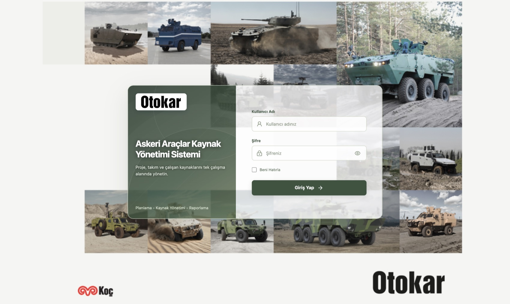
Giriş ekranı
Ekranın bölümleri
Üst bar: Sistem adı, kullanıcı menüsü ve Çıkış. Kullanıcı menüsünden Varsayılan sekme seçilir (bu tarayıcıda sonraki girişte açılacak ekran). Admin bu menüde ayrıca Veri Yedeği İndir ve Yedek Yükle işlemlerini görür.
Sekmeler: Gruplar halinde dizilir ve ince çizgilerle ayrılır: gerçekleşen ve aktivite · planlama ve projeler · raporlar · yönetim. Her kullanıcı yalnız rolünün izin verdiği sekmeleri görür.
Araç satırı:Görünüm (Ayrıntılı, Kompakt, 5 Yıllık Genel Bakış), ekrana özel düğmeler ve Excel'e Aktar / Proje Raporunu İndir / Kaynak Raporu İndir.
Filtreler: Liderlik, Takım, Proje, Kişi, Başlangıç Ayı ve Görünür Dönem. Filtreleri Sıfırla varsayılana döndürür. Filtre yalnız görünümü daraltır, yetki vermez.
Sadece veri olanlar: Planlanan ve gerçekleşen tablolarda boş/0 satırları gizler. Her açılışta kapalı başlar.
Bildirimler: "Veritabanına kaydedildi", "N kayıt birlikte kaydedildi", "Filtre uygulandı" gibi mesajlar sağ altta birkaç saniye görünüp kaybolur; tabloyu kaydırmaz. Hata mesajları ise ekranda kalır.
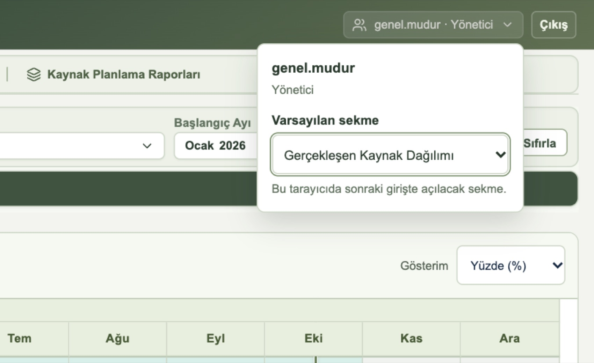
Kullanıcı menüsü: rol bilgisi ve varsayılan sekme seçimi
2. Roller
Her hesabın tek bir uygulama rolü vardır. Rol, hangi ekranların görüneceğini ve hangi kayıtların değiştirilebileceğini belirler. Ayrıntılı karşılaştırma 10. bölümdeki yetki matrisindedir.
Admin
Tüm ekranları ve tüm verileri görür, tümünü düzenler. Çalışan, hesap, rol, organizasyon, ortak çalışma takvimi, veri yükleme, değişiklik geçmişi ve yedekleme işlemleri yalnız Admin'e aittir.
Yönetici
Planlanan dağılımda tüm takımları görür, yalnız kendisine verilen liderlik veya takım kapsamında giriş yapar. Yetkili liderliklerindeki çalışanların gerçekleşen dağılımını düzenler. Projeleri, kritik konuları ve raporları görüntüler.
Normal Kullanıcı
Kendi gerçekleşen dağılımını ve kişisel izin/eğitim takvimini girer. Kendi takımının aylık aktivitesini ve kendisine görünür projeleri görüntüler.
Normal-Proje
Yalnız Mühendislik Liderliği Projeler ve Kritik Proje Konuları ekranlarını görür. Bu iki ekranda Admin ile aynı yetkilere sahiptir: proje ekler, düzenler, siler, sıralar; aşama, başlık, not, milestone ve kritik konuları yönetir; proje görüntüleme yetkisini belirler. Tüm projeleri görür.
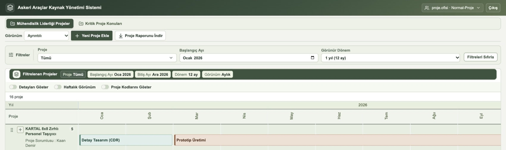
Normal-Proje rolündeki kullanıcı yalnız iki sekme görür; Yeni Proje Ekle düğmesi açıktır.
Kaynak rolü ile uygulama rolü farklıdır. Çalışan kaydındaki Lider, Product Owner, Team Member veya CoE bilgisi organizasyondaki görevi gösterir; kendiliğinden uygulama yetkisi vermez. Uygulama rolü, çalışan formundaki Hesap ve Yetkiler bölümünden ayrıca atanır.
Yönetici yetki kapsamı
Liderlik yetkisi: Seçilen liderlik ve altındaki tüm liderlik/takımlar için planlanan dağılım girişi ve bu birimlerdeki çalışanların gerçekleşen dağılımı.
Takım yetkisi: Yalnız seçilen takım için planlanan dağılım girişi. Takım yetkisi, o takımdaki çalışanların gerçekleşen dağılımını düzenleme hakkı vermez.
Yönetici, başka bir çalışanın kişisel izin/eğitim takvimini görüntüleyemez ve değiştiremez.
3. Gerçekleşen Kaynak Dağılımı ve kişisel takvim
Çalışanların projelere fiilen ayırdığı süre aylık olarak bu ekranda girilir. Satırlar proje altında kişi bazındadır; proje satırında o dönemin aşamaları görünür.
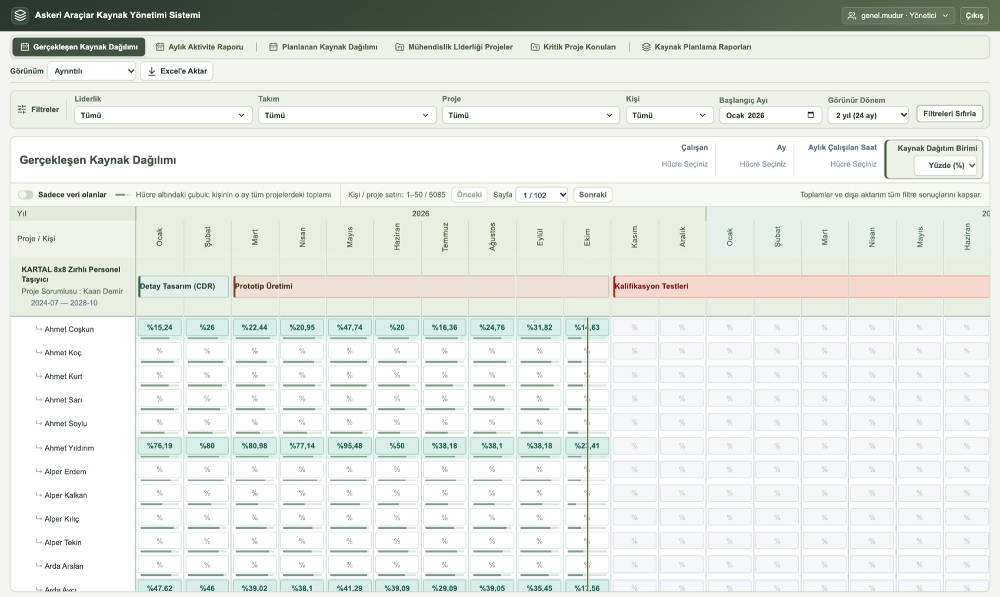
Gerçekleşen Kaynak Dağılımı (Yönetici görünümü). Hücre altındaki çubuk, kişinin o ay tüm projelerdeki toplamını gösterir.
Aylık süre girme
Filtrelerden kişi, proje ve dönemi seçin. Kaynak Dağıtım Birimi alanından Yüzde (%) veya Saat seçin.
İlgili ay hücresine değeri yazın; Enter'a basın veya hücreden çıkın. Kayıt sonucu sağ altta kısa bir bildirimle görünür.
Hücre değerini ve hücre altındaki aylık toplam çubuğunu kontrol edin. Hücre seçildiğinde sağ üstte çalışan, ay ve aylık çalışılan saat bilgisi görünür.
Giriş yalnız içinde bulunulan ay ve geçmiş aylar için, proje dönemi içinde yapılabilir. Proje süreleri ile eğitim toplamı kişinin net aylık kapasitesini aşamaz. Normal Kullanıcı tabloda yalnız kendi satırlarını görür.
Ortak çalışma takvimi (yalnız Admin)
Araç satırındaki Çalışma Takvimi düğmesiyle resmî tatil ve çalışma dışı günler tanımlanır; değişiklikler Takvimi Kaydet ile kalıcı olur. Ortak takvimde başlangıç ve bitiş günleri dahildir.
Kişisel izin ve eğitim takvimi
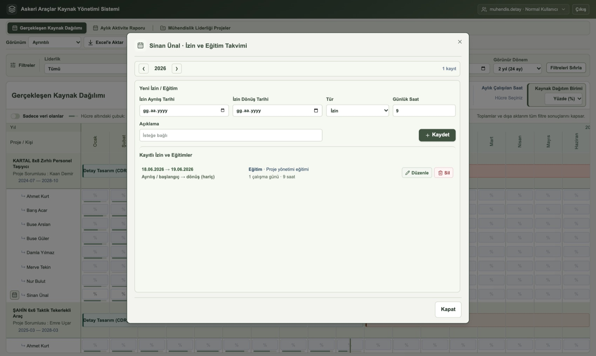
Çalışan adının solundaki takvim simgesiyle açılan İzin ve Eğitim Takvimi.
Gerçekleşen tablosunda çalışan adının solundaki takvim simgesine tıklayın. Üstteki oklarla yıl değiştirilebilir.
Yeni İzin / Eğitim bölümünde İzin Ayrılış Tarihi, İzin Dönüş Tarihi, Tür (İzin veya Eğitim) ve Günlük Saat girin; isterseniz Açıklama ekleyin. Kaydet.
Kayıt Kayıtlı İzin ve Eğitimler listesinde görünür. Düzenle ile değiştirin, Sil ile kaldırın. Kapat ile pencereden çıkın.
Dönüş günü hesaba katılmaz. 12 Ekim ayrılış, 15 Ekim dönüş için 12, 13 ve 14 Ekim değerlendirilir. Hafta sonları ve tatiller atlanır. İzin çalışma saatinden düşer; eğitim dağıtılan süreye eklenir. Günlük saat 0,5–9 aralığındadır; aynı gündeki izin ve eğitim toplamı 9 saati aşamaz.
Kişisel takvimi yalnız çalışanın kendisi ve Admin görür ve düzenler. Yönetici, ekibindeki çalışanların takvimini açamaz.
4. Aylık Aktivite Raporu
Çalışanların seçili dönemdeki aylık faaliyet toplamlarını gösterir; yalnız görüntüleme içindir. Düzeltmeler gerçekleşen dağılım ekranında veya kişisel takvimde yapılır.
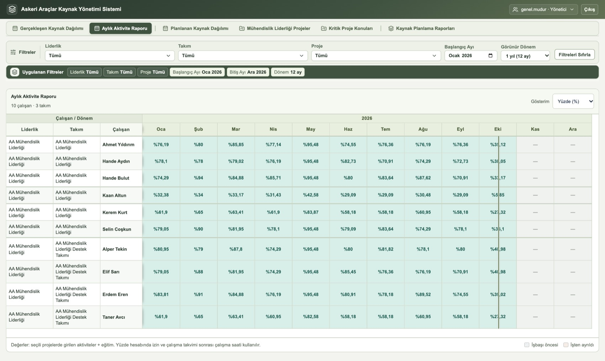
Aylık Aktivite Raporu: liderlik, takım ve çalışan bazında aylık toplamlar.
Filtrelerden liderlik, takım, proje ve dönemi seçin; Gösterim alanından birimi (Yüzde veya Saat) belirleyin.
Değerler seçili projelerde girilen aktiviteler ile eğitimin toplamıdır. Yüzde hesabında izin ve çalışma takvimi sonrası kalan çalışma saati kullanılır.
İşbaşı öncesi ve işten ayrılış sonrası aylar ayrı renkle işaretlenir. İlanlar bu raporda gösterilmez.
Kapsam: Admin tümünü, Yönetici kendi liderliğini ve alt liderliklerini, Normal Kullanıcı kendi takımını görür. Başka bir çalışanın satırını görmek, düzenleme yetkisi vermez.
5. Planlanan Kaynak Dağılımı
Admin ve Yönetici içindir. Değerler kişi bazında değil, takım veya liderlik kaynağı için kişi eşdeğeri olarak girilir (0,5 = yarım kaynak).
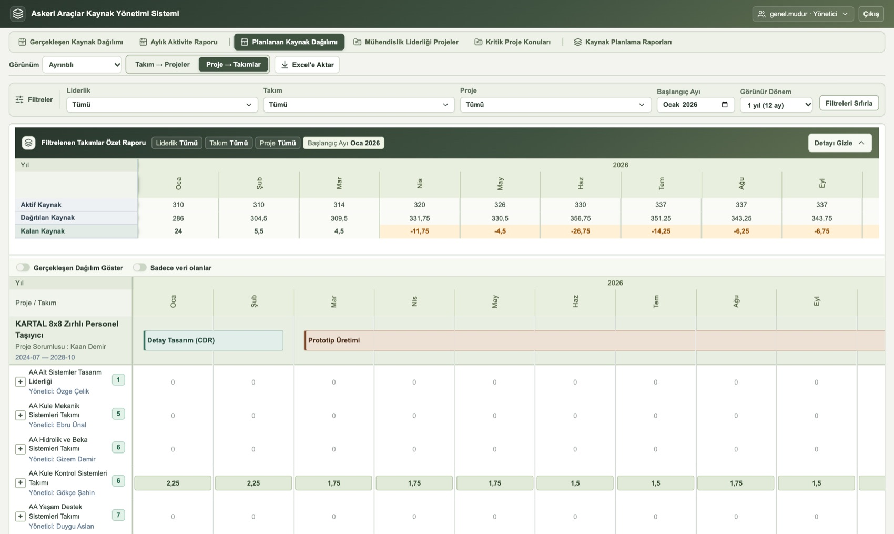
Üstte filtrelenen takımların Aktif / Dağıtılan / Kalan Kaynak özeti; altta proje bazlı takım dağılımı.
Kaynak planlama
Görünüm olarak Takım → Projeler veya Proje → Takımlar seçin; filtreleri belirleyin.
Yetkili olduğunuz ay hücresine değeri yazıp Enter'a basın. Yetkisiz veya proje dönemi dışındaki hücreler kilitlidir.
Özetteki Kalan Kaynak değerini kontrol edin; negatif değer kaynak açığıdır ve renkli gösterilir. Özet, Detayı Gizle ile kapatılabilir.
Hızlı giriş
İşlem
Yöntem
Birden fazla hücre seçmek
Fareyi basılı tutup sürükleyin; Ctrl ile seçime ekleyin.
Seçime aynı değeri yazmak
Değeri yazıp Ctrl+Enter.
Kopyala / yapıştır
Ctrl+C / Ctrl+V veya sağ tık menüsü.
Seçimi kaldırmak
Esc veya tablo dışına tıklama.
Gerçekleşen Dağılım Göster açıldığında plan değerlerinin yanında gerçekleşen değerler de görünür.
Tüm Dağılımları Sıfırla yalnız Admin'de görünür; ekran filtresinden bağımsız olarak tüm aylardaki planı temizler ve uygulama içinden geri alınamaz.
6. Projeler ve Kritik Proje Konuları
Projeleri tüm roller görüntüler (proje görüntüleme yetkisine tabi). Aşağıdaki düzenleme işlemleri Admin ve Normal-Proje içindir.
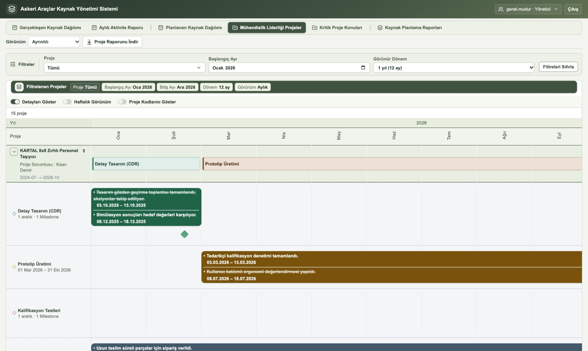
Detayları Göster açıkken aşamalar altında başlıklar, tarih aralıklı notlar ve milestone'lar (baklava) görünür. Üstü çizili notlar tamamlanmıştır.
Proje ekleme ve düzenleme
Yeni Proje Ekle ile proje adı, kodu, sorumlusu, başlangıç ve bitiş ayını girin. Gerekirse Görüntüleme yetkisi bölümünü doldurun (7. bölüm). Kaydet.
Var olan projeyi düzenlemek için proje adına tıklayın; Proje Bilgilerini Düzenle penceresi açılır. Projeler soldaki tutamaçla sürüklenerek veya Alt+ok tuşlarıyla sıralanır.
Aşama için ay kutusuna çift tıklayın; metin ve renk seçin. Renkler: Çelik Mavi, Petrol Yeşili, Kahverengi, Kırmızı, Petrol Mavisi, Sarı. Görünür dönemden önce başlamış aşamanın adı da dönemin başında gösterilir. Komşu aylar seçilip sağ tık menüsüyle aşama kopyalanabilir.
Detayları Göster açıkken Başlık Ekle ile başlık, tarih aralıklı not veya tek tarihli milestone ekleyin. Gerekli notlarda Rapora Ekle veya Tamamlandı seçin. Barı veya baklavayı sürükleyerek tarihi değiştirebilirsiniz.
Haftalık Görünüm aylık aşamayı haftalara yansıtır. Proje Kodlarını Göster açıksa proje Excel çıktısına kod sütunu eklenir.
Projeyi Sil, projenin planlanan ve gerçekleşen dağılımlarını, aşamalarını ve bağlı konularını da kaldırır.
Kritik Proje Konuları
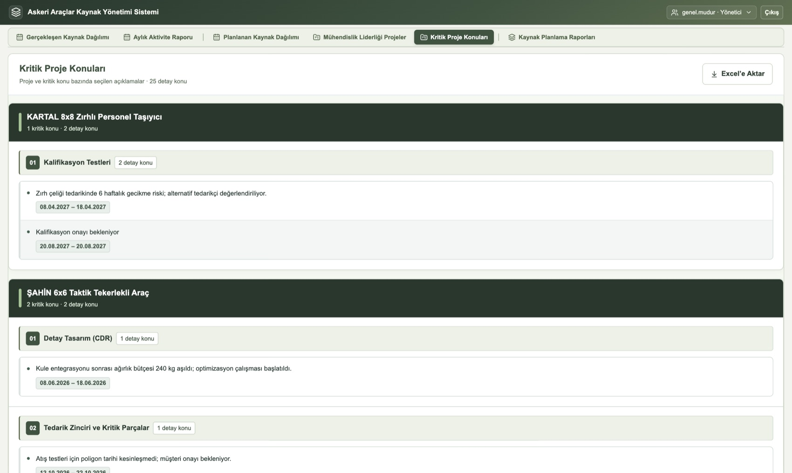
Rapora eklenen notlar proje ve başlık bazında gruplanır.
Projelerde Rapora Ekle ile işaretlenen notlar burada proje ve başlık bazında listelenir.
Admin ve Normal-Proje içerikleri düzenleyebilir; değişiklik proje ekranına da yansır.
Tamamlandı notu yeşil ve üstü çizili gösterir; Geri Al işareti kaldırır. Rapordan Çıkar notu yalnız listeden çıkarır, silmez.
Yönetici bu ekranı yalnız görüntüler; Normal Kullanıcı bu sekmeyi görmez.
Excel'e Aktar gruplu listeyi tarihleriyle birlikte indirir.
7. Proje görüntüleme yetkisi
Her proje için kimlerin projeyi görebileceği, Yeni Proje Ekle ve Proje Bilgilerini Düzenle pencerelerindeki Görüntüleme yetkisi bölümünden belirlenir.
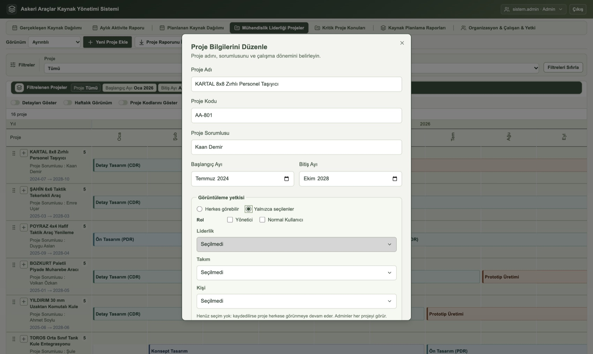
"Yalnızca seçilenler" seçildiğinde rol, liderlik, takım ve kişi kuralları tanımlanabilir.
Kurallar
Herkes görebilir varsayılandır; hiçbir kural yoksa proje tüm kullanıcılara görünür.
Yalnızca seçilenler seçilip hiçbir seçim yapılmazsa proje yine herkese açık kalır.
Kurallar "veya" ile birleşir: kullanıcı seçilen rol, liderlik, takım veya kişi kurallarından herhangi birine uyuyorsa projeyi görür.
Liderlik kuralı, o liderliğe bağlı alt liderlik ve takımları da kapsar.
Kısıtlı projelerin adının yanında kilit simgesi görünür.
Otomatik görünürlük
Admin ve Normal-Proje her projeyi görür.
Kullanıcının takımına (Yönetici için yetkili takımlarına) projede planlanan kaynak varsa, proje kurala bakılmaksızın görünür.
Kullanıcının kendisinin veya yönettiği çalışanların projede gerçekleşen kaydı varsa proje görünür.
Gizli projelerin kaynakları toplamlarda korunur: takım kapasitesi ve Kalan Kaynak doğru hesaplanır, yalnız proje adı ve satırları gösterilmez.
8. Kaynak Planlama Raporları ve Head Count
Admin ve Yönetici içindir. Araç satırından Kaynak Raporları veya Head Count görünümü seçilir.
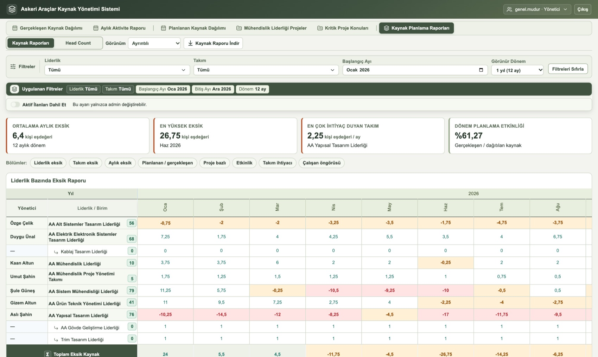
Özet kartları, bölüm kısayolları ve Liderlik Bazında Eksik Raporu.
Kaynak Raporları
Özet kartları: Ortalama aylık eksik, en yüksek eksik, en çok ihtiyaç duyan takım ve dönem planlama etkinliği.
Bölümler: Kısayollar ilgili rapora kaydırarak götürür.
Rapor / grafik
Nasıl okunur?
Liderlik / Takım Bazında Eksik
Birimlerin aylık kalan kaynağı; negatif değer açıktır. Alt liderlikler üst toplamın kırılımıdır, tekrar toplanmaz.
Aylık Eksik Kaynak Grafiği
Her ay için Dağıtılan − Aktif Kaynak (en az sıfır).
Planlanan / Gerçekleşen Karşılaştırma
Aylık ve proje bazlı (en fazla 10 proje) plan ile gerçekleşen karşılaştırması.
Süreç Etkinlik Grafiği
Gerçekleşen / Planlanan × 100. Plan sıfırsa oran hesaplanmaz.
Takım Bazlı İhtiyaç
Takımın aylık pozitif açıklarının seçilen ay sayısına bölünmüş ortalaması.
Çalışan Sayısı ve Öngörü
Birikimli aylık ortalama; tarihli aktif ilanlar öngörüye eklenir.
Head Count
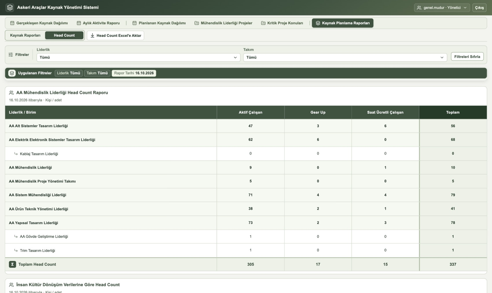
AA Mühendislik Liderliği Head Count Raporu.
AA Mühendislik Liderliği Head Count Raporu: Aktif Çalışan + Gear Up + Saat Ücretli Çalışan.
İnsan Kültür Dönüşüm Verilerine Göre Head Count: Aktif Çalışan, Aktif İlan ve Pasif İlan ayrı gösterilir; Aktif İlan Dahil Head Count = Aktif Çalışan + Aktif İlan.
Bugünkü durumu kişi/adet olarak sayar; plana dahil seçimine bağlı değildir. Head Count Excel'e Aktar ile indirilir.
Aktif İlanları Dahil Et (Kaynak Raporları üstünde) varsayılan olarak kapalıdır ve yalnız Admin değiştirebilir. Açıldığında tüm aktif ilanlar bugünkü tarihle kaynak planlamasına dahil edilir; kapatıldığında plandan çıkarılır. Bu işlem kayıtları değiştirir, yalnız görünümü değil; rapor filtresi işlemi sınırlamaz.
9. Organizasyon, çalışan ve hesap yönetimi
Yalnız Admin içindir. Organizasyon & Çalışan & Yetki sekmesinde Çalışan & Yetki Tanımlama ve Organizasyon Yapısı görünümleri bulunur.
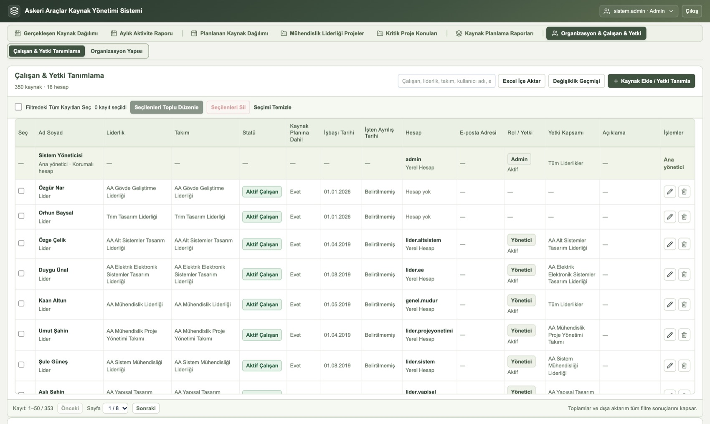
Çalışan listesi: statü, plana dahil bilgisi, hesap, rol ve yetki kapsamı. Satır sonundaki simgeler düzenler veya siler.
Arama kutusu ad, liderlik, takım, kullanıcı adı veya e-postaya göre süzer.
Satırlar seçilip Seçilenleri Toplu Düzenle veya Seçilenleri Sil uygulanabilir; Filtredeki Tüm Kayıtları Seç tüm sonucu seçer.
Geçmişi korumak için çalışan silmek yerine statüsünü İşten Ayrıldı yapın; silme, gerçekleşen kayıtları da kaldırır.
Çalışan veya ilan ekleme ve hesap tanımlama
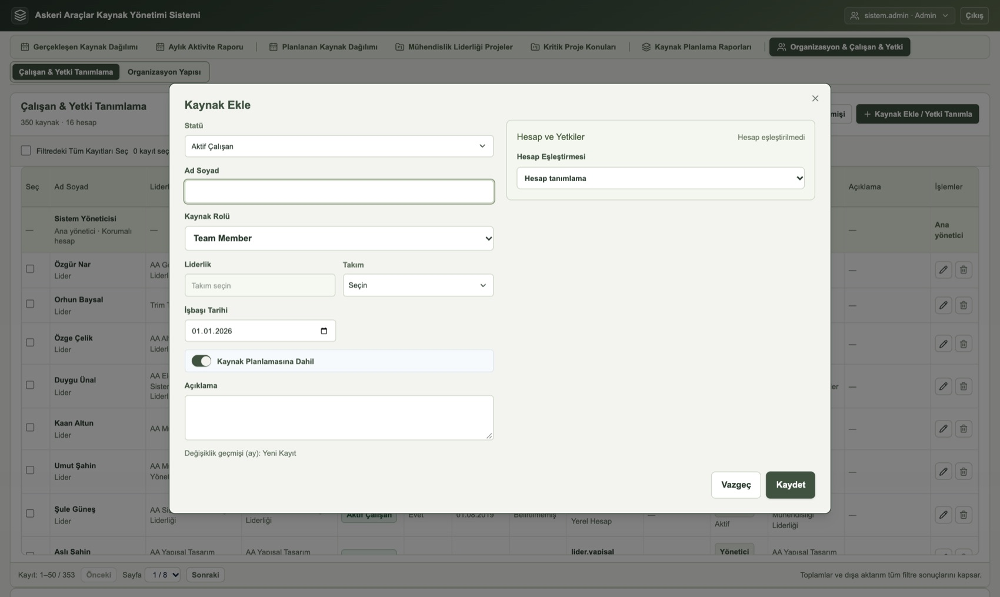
Kaynak Ekle penceresi: solda kaynak bilgileri, sağda Hesap ve Yetkiler.
Kaynak Ekle / Yetki Tanımla ile önce Statü seçin.
Ad Soyad, Kaynak Rolü, Liderlik/Takım, tarihler ve Kaynak Planlamasına Dahil seçimini girin. İsteğe bağlı Açıklama ekleyin.
Hesap ve Yetkiler bölümünde Hesap Eşleştirmesi alanından Active Directory seçin, kullanıcıyı arayıp seçin ve Rol belirleyin: Admin, Yönetici, Normal Kullanıcı veya Normal-Proje.
Yönetici için Planlanan Kaynak Dağılımı Yetkisi ağacından liderlik veya takım seçin. Üst liderlik seçimi alt birimleri de kapsar. Kaydet.
Uygulama Yetkisini Kaldır, çalışanı ve AD hesabını silmeden uygulama erişimini kapatır.
Statü
Form davranışı
Aktif Çalışan / Gear Up / SAAT Ücretli Ofis Ç.
İşbaşı tarihi zorunludur; bu yılın 1 Ocak günü önerilir.
Aktif İlan
Ad ve kaynak rolü istenmez. Dahil seçimi kapalı başlar; dahil etmek için tahmini işbaşı tarihi gerekir. İlana hesap tanımlanamaz.
Pasif İlan
Aktif kapasiteye eklenmez.
İşten Ayrıldı
İşbaşı ve ayrılış tarihleri gerekir. Eski gerçekleşen kayıtları korunur.
Organizasyon Yapısı
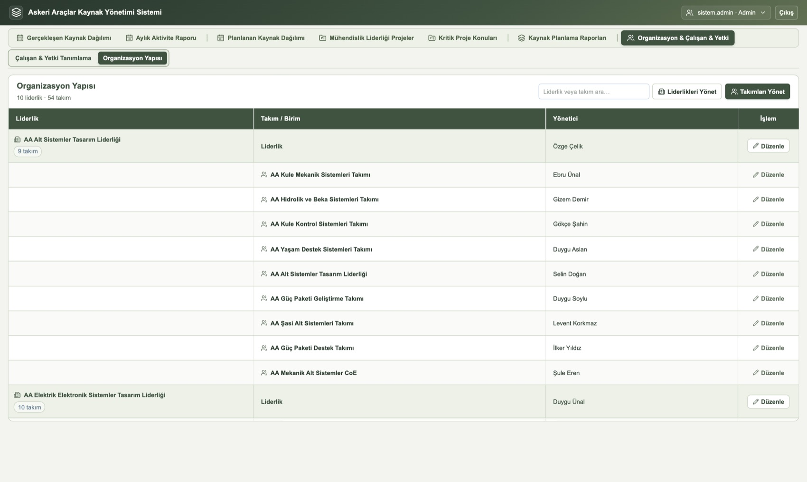
Liderlikler, bağlı takımlar ve yöneticileri.
Liderlikleri Yönet ve Takımları Yönet ile birimler ve aralarındaki bağlantılar düzenlenir; satırdaki Düzenle tek birimi açar. Yönetici adı, Lider veya Product Owner atamasından gelir. Bağlı kayıtlar silmeyi engelleyebilir.
Değişiklik Geçmişi ve Excel İçe Aktar
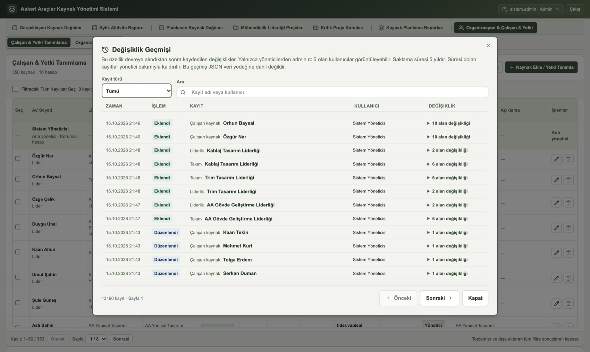
Değişiklik Geçmişi: kayıt türü ve metin filtresi, işlem türü, kullanıcı ve alan değişiklikleri.
Değişiklik Geçmişi kim, ne zaman, hangi kaydı ekledi, düzenledi veya sildi gösterir. Kayıt türü ve Ara ile süzülür; satırdaki değişiklik özeti açılınca eski ve yeni değerler görünür. Kayıtlar 5 yıl saklanır ve JSON veri yedeğine dahil değildir.
Excel İçe Aktar şablondan kaynak ekler; önce önizleme gösterir. Hesap veya yetki oluşturmaz.
Veri Yedeği İndir (kullanıcı menüsü) şifrelenmemiş JSON planlama yedeğidir; hesap ve oturum bilgisi içermez. Yedek Yükle mevcut planlama verisinin yerine geçer, birleştirmez.
10. Yetki matrisi
Düzenler görüntüler ve değiştirirKapsamlı yalnız belirtilen kapsamdaGörür yalnız görüntüler— erişim yok